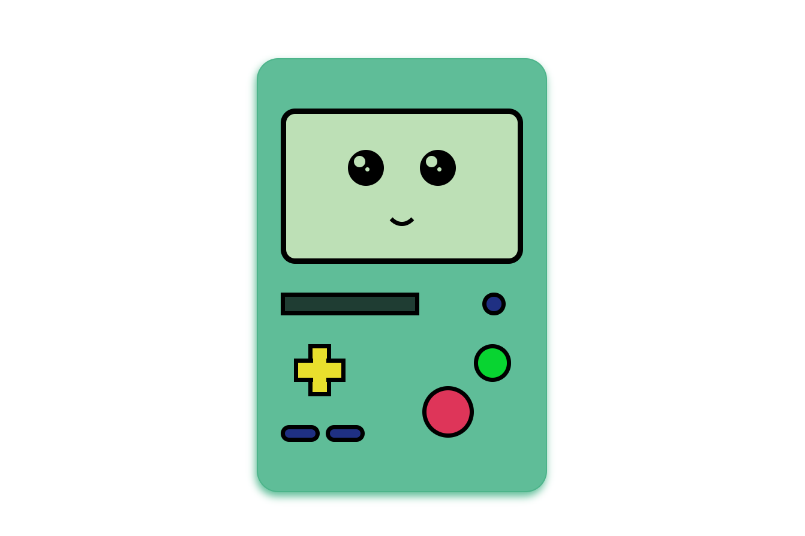
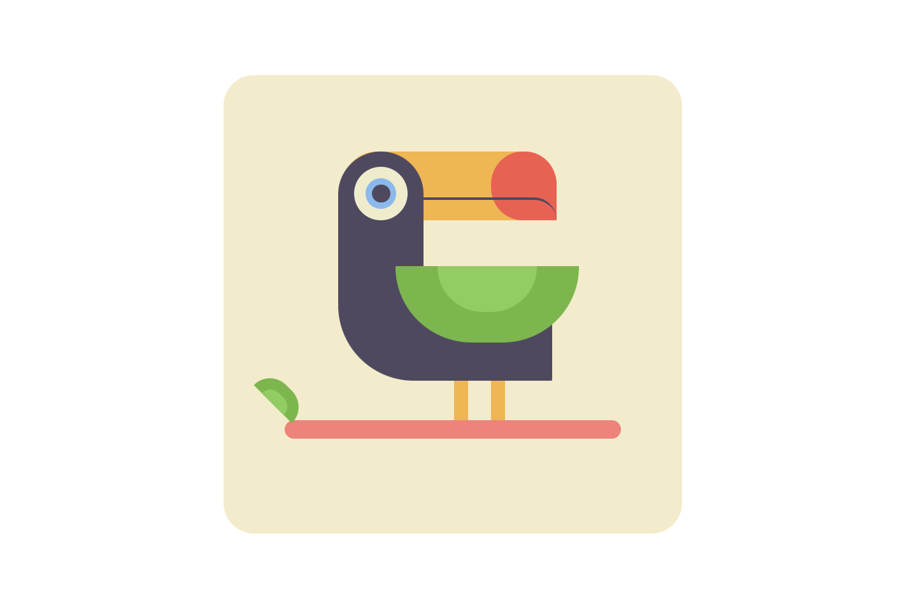

CSS Drawings

BMO
Bmo es un personaje de una serie de animacion llamada ‘Hora de aventura’, Bmo es una consola de videojuegos viviente que vive con Finn y Jake en un arbol. ‘Hora de aventura’ es una serie que hace parte de mi infancia y de las más nostalgicas de recordar; todos los personajes son increibles pero decidí dibujar a Bmo por su relacion con mi pasion por la tecnologia.

BIRD
Este dibujo fue una inspiracion de Pinterest, su diseño era perfecto para perfeccionar mis habilidades con CSS y fue uno de los mas dificiles de maquetar por su forma, despues de darle vueltas decidí usar Css grid y un poco de Css flex.